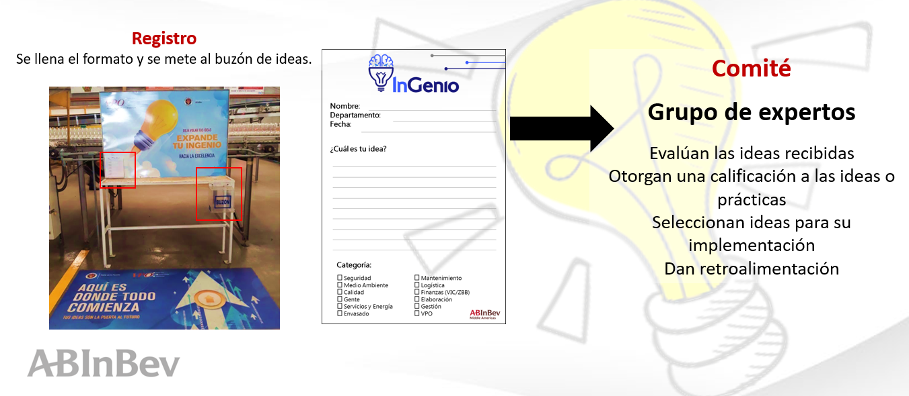
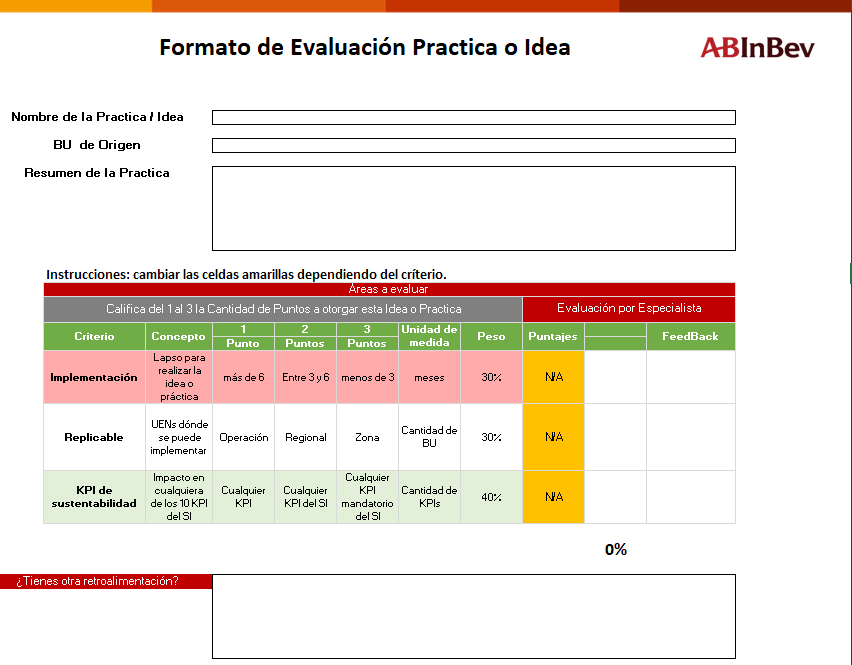
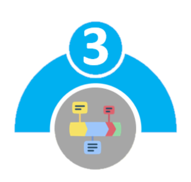
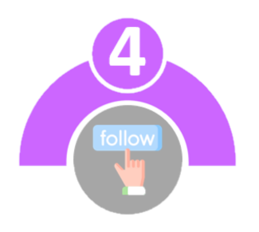

El Programa de Buenas Prácticas es un programa local de generación de ideas destinado a nutrir, apoyar y fomentar una cultura de innovación en todos los niveles de la organización. Su propósito es:
Crear un proceso para la presentación, revisión, implementación e intercambio de ideas y prácticas para impulsar la creatividad y la iniciativa de los empleados.
Mejorar la moral de los empleados.
Reconocer a los empleados por su contribución a la optimización de procesos.
Mejorar la eficiencia y el rendimiento.
Pasos a seguir:
1.Cualquier miembro de cualquier equipo puede presentar una idea o práctica a su gerente.
2.El gerente debe validar y verificar si cumple con los criterios.
3.La práctica validada debe implementarse y entregar resultados.
4.La persona o equipo que desarrolló e implementó la práctica debe ser reconocida.
5.La práctica debe ser compartida con otros en todos los niveles, según corresponda.
Ideas
Propuestas para crear un producto, proceso, conceptos, servicios y nuevas prácticas.
Impactando en:
Costo
Calidad
Simplicidad.
Nuevas formas de resolver problemas
Buenas Prácticas
Procesos fáciles y sencillos de implementar generados por la creatividad de la gente.
Ayudan a obtener ganancias rápidas.
Comprobada posterior a su implementación
6 meses como mínimo.
Mejores Prácticas
Optimizan procesos, reducen pérdidas, incrementan las utilidades, mejoran la calidad y la nuestra organización logre su seguridad y ayudan a que sueño.
Postular la mejor práctica de cada regional.
Registro

Formato

Rutina
Cada mes se deben de revisar las prácticas cargadas por las operaciones para el departamento correspondiente.
Carrito de Compras
¡En Eureka! enviar por medio del carrito de compras las prácticas que se pueden replicar a las operaciones que
consideramos deben implementar la práctica.
Planeación
Planear en conjunto con las operaciones la implementación de las prácticas.

Seguimiento

Acompañar a las operaciones durante la implementación y garantizar la ejecución de la gestión del cambio correspondiente.
| Si es una práctica | No es una práctica |
|---|---|
| Un cambio técnico en la operación, el proceso o el diseño del equipo | No es seguir las recomendaciones en los manuales |
| Son innovadoras | No es simplemente seguir el proceso de VPO para obtener mejores resultados. |
| Una manera única de usar las herramientas de VPO. | Resultado de una solución de problemas bien ejecutada, esa es la expectativa. |
| Ya implementado y probado para generar resultados | Una idea genial, pero aún no implementada o probada como factible y efectiva. |
Cumple con todos los estándares de Seguridad, Calidad y Medio Ambiente
Es nueva e innovadora
Es aplicable en múltiples sitios
Es fácil de escalar en la Zona
Ha sido implementada y ha pasado la aprobación de ser sustentable
Impacto en KPI de sustentabilidad
El uso de un medidor para correlacionar las abolladuras de la lata con las ruedas de estrella en particular en la enjuagadora / llenadora para facilitar la solución de problemas.
Botón HMI para modular automáticamente todos los motores del transportador para paradas de fin de semana.
Modificación de los desagües de descarga del filtro Mash para agregar cámaras adicionales y filtros de acero inoxidable para reducir los incumplimientos ambientales en un 50%.
Agregar programación a las carretillas elevadoras para que se apaguen automáticamente después de 2 minutos sin actividad para ahorrar combustible.
Implementación de filtros de agua en los solenoides del condensador de amoníaco para evitar bloqueos sólidos y reducir el uso de agua.
Uso de herramientas VPO para reducir el uso de agua debido al alto riesgo de agua.
Asignar un lugar específico para almacenar las paletas de productos del canal moderno, de modo que en el momento del envío puedan ubicarse fácilmente.
Uso de GOP de modulación y mejores PI para reducir el TPE.
Objetivos de uso de agua del departamento / área para limpieza para reducir el uso de agua.
Fisicoquimico incluido en el sueño, hecho visible en todos los departamentos, mayor sentido de propiedad y urgencia.